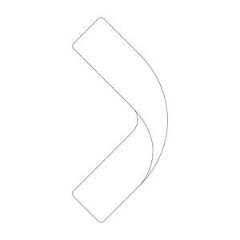

Trade Mark Journal No.2025/034 22 August 2025
UK00004249373 14 August 2025 (1,9,19,42)
Mark 1
Mark 2

Mark 3
- Class 1
- Perovskite compounds; metal halide perovskite compounds; chemicals used in the manufacture of electronic devices; chemicals used in the manufacture of optoelectronic devices; chemicals used in the manufacture of photovoltaic devices; chemicals used for glazing photovoltaic glass for use in solar cells.
- Class 9
- Optoelectronic devices; photodiodes; photovoltaic inverters; photovoltaic devices; photovoltaic panels; photovoltaic modules; photovoltaic modules for use in aerospace applications; photovoltaic modules used to power transport; photovoltaic cells; photovoltaic cells for use in aerospace applications; photovoltaic cells used to power transport; solar cells; solar panel arrays; perovskite solar cells; tandem solar cells; perovskite-on-silicon tandem solar cells; apparatus for generating electricity; apparatus for storing electricity; accumulators for photovoltaic power; photovoltaic systems; light emitting diodes; polymer light emitting diodes; organic light emitting diodes; photovoltaic power stations; photovoltaic windows and glazing for use in solar cells.
- Class 19
- Window glass, laminated or coated with solar cells for electricity generation and/or including with light emitting diodes; textured glass for use in solar energy units; solar control, low emissivity and coated glass sheets used in building; solar glass transparent electrodes for photovoltaic cells (micro-, poly-, and monocrystalline-); combination of glass of any type with solar modules, including insulating glass and safety glass as windows, replacing windows, as facade elements, roofs and roof elements; chemical treated glass panels for building; construction materials not of metal, namely, chemical treated glass panels for photovoltaic panels mounted on building facades and roofs.
- Class 42
- Scientific research in relation to photovoltaic technology and solar collectors; research, design and development services in the field of photovoltaic technology; engineering services in the field of photovoltaic systems and solar cells; technological advice and consultancy in relation to photovoltaic systems and solar cells; advice and consultancy in silicon solar economics; technological research and consultation in the field of photovoltaic products used in aerospace applications; technological research and consultation in the field of photovoltaic products used to power transport.
Oxford Photovoltaics Limited
Representative: The IP Asset Partnership Limited